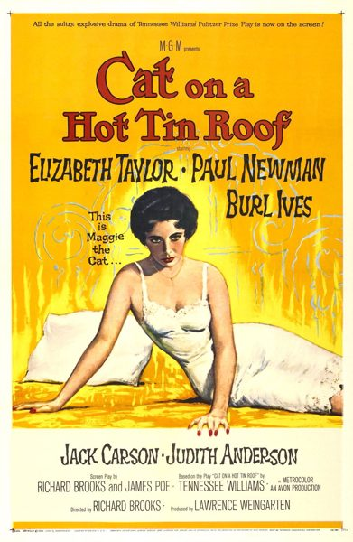

Cat on a Hot Tin Roof

Starring: Elizabeth Taylor, Paul Newman, Burl Ives
Director: Richard Brooks
Writer: Richard Brooks, James Poe
Producer: Lawrence Weingarten
Cat on a Hot Tin Roof is a 1958 American drama film directed by Richard Brooks (who co-wrote the screenplay with James Poe) based on the 1955 Pulitzer Prize-winning play of the same name by Tennessee Williams. The film stars Elizabeth Taylor, Paul Newman, Burl Ives, Jack Carson and Judith Anderson.
Watch Online: YouTube
Trivia
- Selected for the National Board of Review: Top Ten Films.
- Also nominated for: Academy Award for Best Picture; Academy Award for Best Actor; Academy Award for Best Actress; Academy Award for Best Director; and 2 more.
- Based on Cat on a Hot Tin Roof (stage play by Tennessee Williams).
- The original stage production of Cat on a Hot Tin Roof opened on Broadway on March 24, 1955, with Burl Ives and Madeleine Sherwood in the roles that they subsequently played in the film.
- Dore Schary was head of MGM. He saw the play and authorized the purchase of the film rights, intending for it to star Grace Kelly, be directed by Joshua Logan, and be produced by Sol Siegel.
- Siegel did not want to produce the film and Kelly retired from acting to marry Rainier III, Prince of Monaco, so Logan lost interest.
Previous Showings
4 Runs • 3 Festivals
All runs on record (4):
- July 21, 1994w/ The Asphalt Jungle
- November 19 - 21, 2004Marlon Brando: His First Decade in Films, plus Nine Musicals with Fred Astaire aw/ Sayonara
- April 16 - 18, 2011Elizabeth Taylorw/ A Place in the Sun
- April 25 - 26, 2013The 1950sw/ The Long, Hot Summer